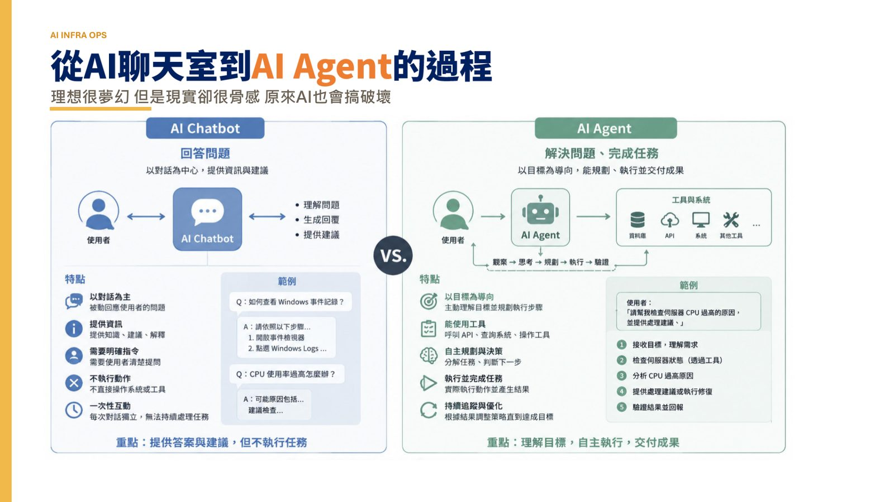
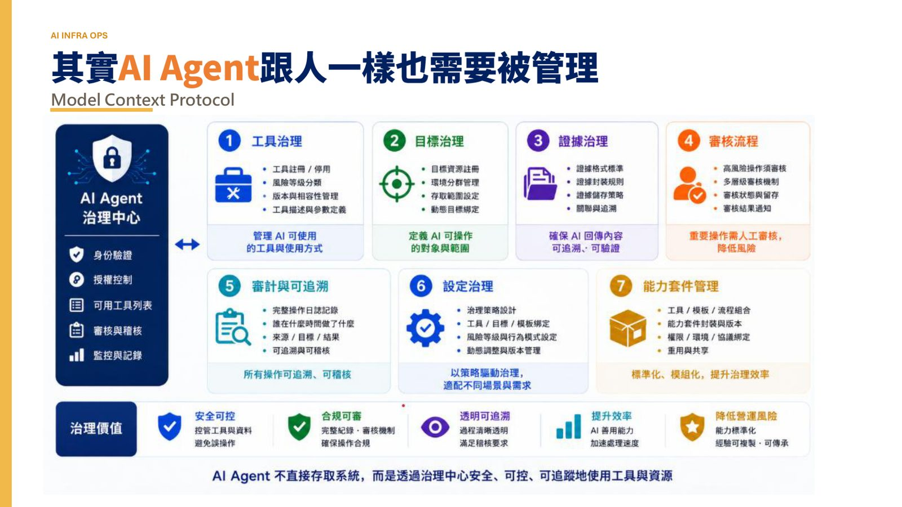
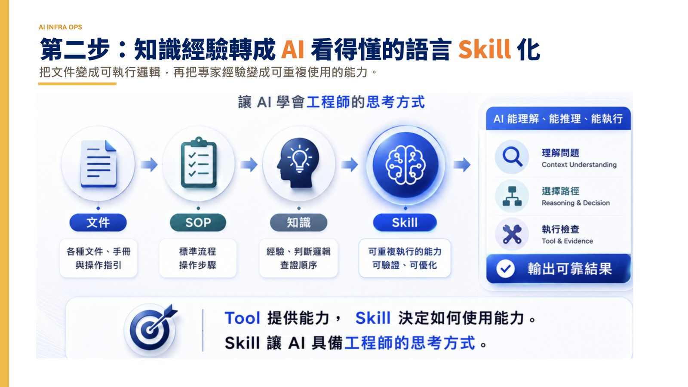
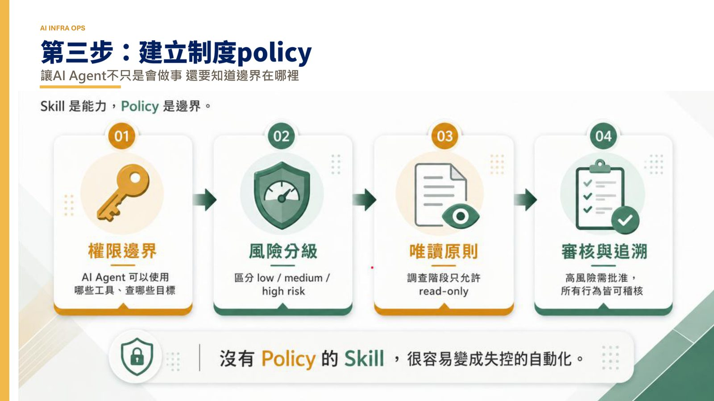

摘要
本演講聚焦於企業 IT 基礎設施維運（Infra Ops）導入 AI Agent 與 Model Context Protocol (MCP) 的實戰歷程，解決從單純的 AI 聊天問答過渡到自主代理維運時，AI 容易失控「搞破壞」的真實挑戰。演講提出將 AI Agent 視為需要被管理之「新同事」的核心觀念，並規劃了三階段落地框架：第一步是維運經驗的「知識盤點」；第二步是「Skill 化」，將非結構化文件與專家經驗轉化為可執行邏輯與能力；第三步是「建立制度 Policy」以釐清 AI 執行的安全邊界。在技術應用上，展示了「從監控告警、事件調查、證據蒐集到 RCA（根因分析）報告產出」的自動化閉環。此實戰指南揭示了將工程師角色升級為知識作家，將傳統工具驅動維運轉變為知識驅動，最終邁向系統「自主呼吸」的自適應維運願景。
重點整理
- AI Agent 跟人一樣需要被管理，結合 MCP（Model Context Protocol）讓 AI 具備存取維運工具與系統的能力
- 導入 AI Agent 需經歷三步驟：第一步知識盤點（整理長期積累的維運經驗）、第二步將知識經驗 Skill 化（把文件變成可執行邏輯）、第三步建立制度 Policy（讓 AI 知道行為邊界）
- 實際應用場景涵蓋監控告警分析、事件調查、證據蒐集與 RCA（根因分析）報告產出
- 導入 AI 的目的不是取代工程師，而是把經驗變成可複製、可重複使用、可被 AI 執行的組織能力
- 願景是讓 IT infra 系統從工具驅動轉變為知識驅動的維運模式，最終「自己學會怎麼呼吸」
重點圖片／架構圖




從 AI 聊天室到 AI Agent 的現實挑戰
講者開場點出理想與現實的落差：從 AI 聊天室走向 AI Agent 的過程理想很夢幻，但現實卻很骨感，原因是 AI 也會「搞破壞」。這說明了單純把 AI 當作問答工具，與讓它真正具備自主執行維運任務能力之間存在巨大差距，AI Agent 若缺乏適當管理與邊界設計，反而可能對維運環境造成風險。
AI Agent 需要被管理，如同新同事
講者提出核心觀點：AI Agent 跟人一樣也需要被管理，並透過 Model Context Protocol（MCP）作為 AI Agent 與既有系統、工具之間溝通的標準介面。即使有了 AI Agent 加上 MCP，也只是「來了一個新同事」，想讓它真正發揮戰力，還需要經歷幾個關鍵過程，不能只是導入工具就期待立即見效。
三步驟：知識盤點、Skill 化、建立制度
講者提出讓 AI Agent 發揮維運戰力的三個步驟。第一步是知識盤點，整理團隊過去長期積累的維運經驗；第二步是把知識經驗轉換成 AI 看得懂的語言、進行 Skill 化，也就是把文件變成可執行邏輯，再把專家經驗變成可重複使用的能力；第三步則是建立制度 Policy，讓 AI Agent 不只是會做事，還要清楚知道行為的邊界在哪裡，避免自主執行時造成非預期的破壞。
實際場景：從告警到 RCA
講題以實際場景說明三步驟落地後的效果：AI Agent 可協助進行監控告警分析、事件調查、證據蒐集，並產出根因分析（RCA）報告。這個場景體現了從工具驅動轉變為知識驅動的維運模式，讓 AI Agent 承接原本高度仰賴資深工程師經驗判斷的告警處理與根因追查工作，逐步改變傳統 IT Infra 維運的作業方式。
導入 AI 的目的：把經驗轉換成組織能力
講者總結，導入 AI 並非為了取代工程師，而是把個人經驗轉變為可複製、可重複使用、可被 AI 執行的組織能力，也讓工程師從執行例行維運工作，轉型為將經驗萃取、書寫成可傳承知識的角色（如同「把工程師變成寫文章的作家」）。對於未來維運工作的想像，講者期待讓 IT infra 系統能夠「自己學會怎麼呼吸」，實現更高程度的自主維運。